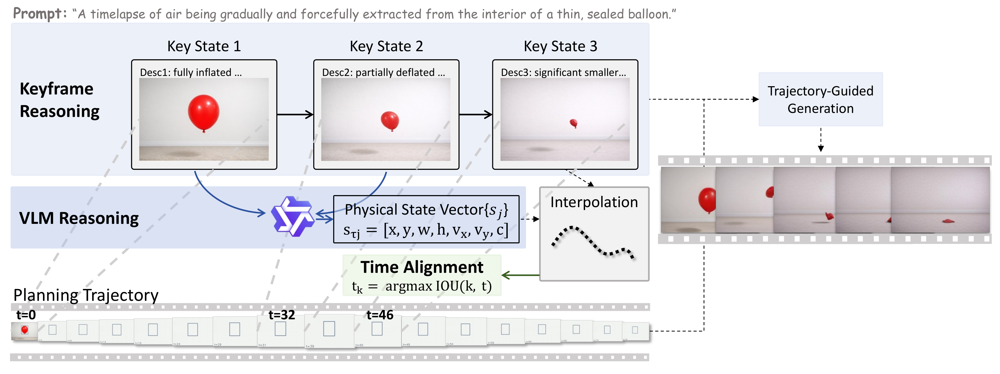
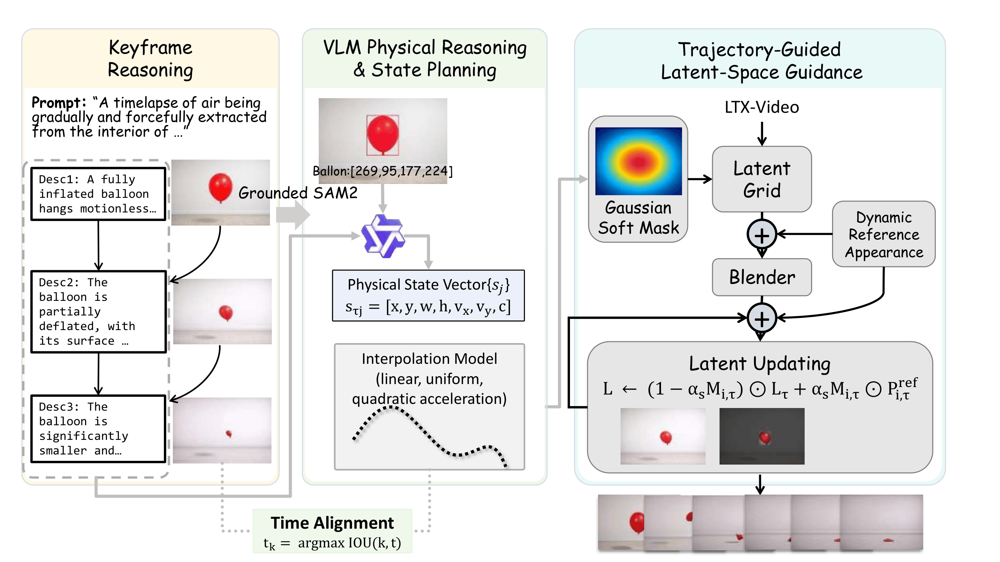
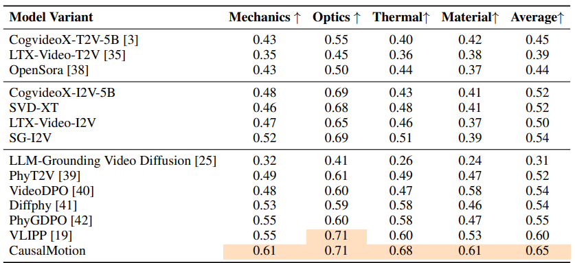
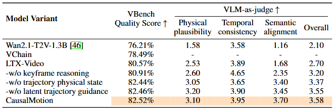
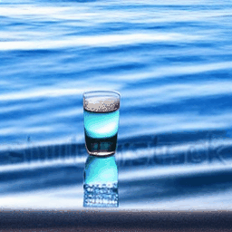
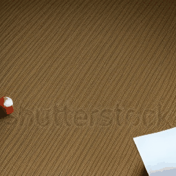

CausalMotion: Structured Physical Reasoning as Keyframe and Trajectory Guidance for Training-Free Video Generation
CausalMotion is a training-free framework that brings explicit physical reasoning into video generation by decomposing a prompt into causally grounded keyframes and object-centric trajectories, then using these structured signals to guide a pretrained diffusion model at inference time.

The framework performs structured physical reasoning to infer key states and object trajectories, then guides a pretrained diffusion model with these intermediate representations.
Abstract
Recent advances in diffusion-based video generation have significantly improved visual quality and short-term temporal coherence. However, existing methods still struggle to produce videos with physically consistent and causally plausible dynamics, especially in scenarios involving long-horizon interactions. This limitation arises from the fact that video diffusion models can only learn physical consistency implicitly, while vision-language models can directly model physical laws. Based on this idea, in this work, we propose CausalMotion, a training-free framework that injects explicit physical reasoning into video generation through structured intermediate representations. Our key idea is to decouple reasoning from generation by leveraging a vision-language model to decompose a text prompt into a sequence of causally consistent keyframes and object-centric motion trajectories. These representations are then aligned and integrated as soft constraints to guide a pretrained video diffusion model during inference. This design enables explicit modeling of object dynamics and causal transitions without requiring additional training or supervision. Extensive experiments show that our method consistently improves physical plausibility and temporal coherence, particularly in dynamics-intensive scenarios, while maintaining high perceptual video quality.
Method
Keyframe Reasoning
Decompose the prompt into key causal states with a multimodal reasoning model.
State Planning
Infer object states including position, scale, velocity, and interactions.
Trajectory Construction
Interpolate sparse physically grounded states into dense trajectories.
Latent Guidance
Use aligned keyframes and trajectories to steer denoising at inference time.

Quantitative Comparisons
We evaluate CausalMotion on PhyGenBench using the PhyGenEval protocol and compare it against both general video generation baselines and physically grounded methods. The results show the best overall average performance, with especially strong gains in mechanics and thermal scenarios.


Intermediate Results
To better explain the pipeline shown in the overview and method figures, we provide intermediate visualizations for representative examples, including generated keyframes and trajectory alignment.
Prompt: A vibrant, elastic basketball is thrown forcefully towards the ground, capturing its dynamic interaction with the surface upon impact.
Keyframes
Use a single overview image or a stitched panel of sparse causal states.


Predicted Trajectory
"Frames": {
"1": [{"id": 0, "name": "basketball", "box": [255, 93, 204, 194]}],
"2": [{"id": 0, "name": "basketball", "box": [255, 167, 204, 194]}],
"...": "...",
"13": [{"id": 0, "name": "basketball", "box": [255, 93, 204, 194]}]
}
Alignment Video
Qualitative Comparisons
Prompt: Milk is poured into a cup of black coffee.
Prompt: A wooden pencil is carefully dipped into a glass of crystal-clear water, showing the intriguing visual shifts and reflections caused by the interaction between the pencil and the liquid.

Prompt: A small burning ball of paper was thrown into a pile of dry paper.
